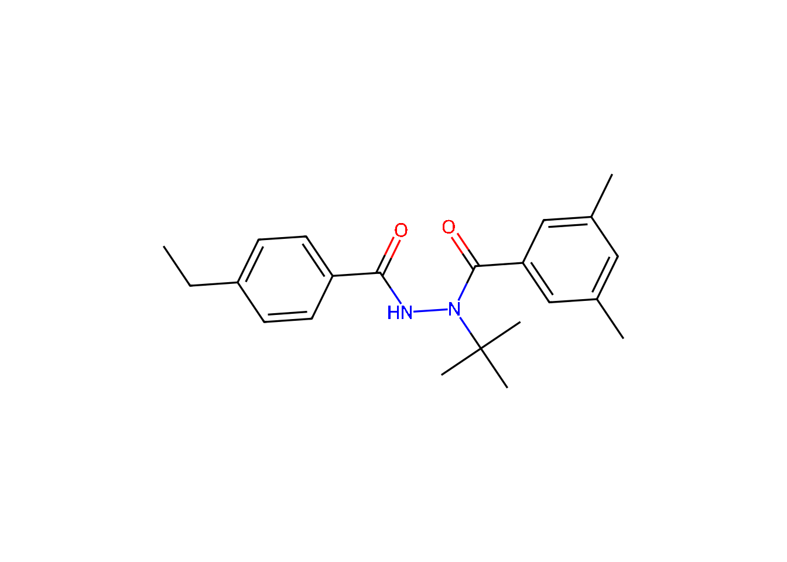

The data contained in this package is mainly provided in the form of the data object derappp::derappp. This data object is a so-called dm object that can be seen as a collection of tables. The relations between the tables are shown in Figure 1.
Code
dm_draw(derappp)The tables containing the endpoints (dark blue), like p0 for the vapour pressure, or soil_sorption for data on sorption to soils, contain references to the table of substances (substances) and to the table of information sources (sources). Tables containing endpoints from toxicity tests additionally contain references to the table of test species (species). The table substance_keys contains mappings of the substance names to identifiers used in other relevant data sources. The compositions of the substances are defined in substance_compositions, which contains references to the table of chemical entities (chents).
The tables in the data object are described in the following sections.
Substances and their compositions
There are three types of substances in this table. Pure, well-defined chemical substances are considered to be chemical entities and have type chent. For all chemical entities, the structure is available in the form of a SMILES code. Substances can also be of the type mixture or undefined.
Code
derappp$substances# A tibble: 392 × 3
substance n_chents type
<chr> <int> <fct>
1 1-Decanol 1 chent
2 1-Methylcyclopropene 1 chent
3 1-Naphthylacetic acid 1 chent
4 1-Naphthylacetic acid sodium salt 1 chent
5 2,4-D 1 chent
6 2,4-D-dimethylammonium 1 chent
7 2,4-DB 1 chent
8 2,6-Dichlorobenzamide 1 chent
9 2-(1-Naphthyl) acetamide 1 chent
10 2-Amino-4,6-dimethoxypyrimidine 1 chent
# ℹ 382 more rowsPure substances with defined chemical structure (chemical entities)
The chemical composition of the substances is stored in substance_compositions as follows. Chemical entities are substances with only one component. The name of the substance is equal to the name of the chemical entity, and the minimum as well as the maximum content is equal to one.
Code
derappp$substance_compositions |> filter(min == 1)# A tibble: 360 × 6
substance chent min max doi page
<chr> <chr> <dbl> <dbl> <chr> <int>
1 1-Decanol 1-Decanol 1 1 <NA> NA
2 1-Methylcyclopropene 1-Methylcycloprope… 1 1 <NA> NA
3 1-Naphthylacetic acid 1-Naphthylacetic a… 1 1 <NA> NA
4 1-Naphthylacetic acid sodium salt 1-Naphthylacetic a… 1 1 <NA> NA
5 2,4-D 2,4-D 1 1 <NA> NA
6 2,4-D-dimethylammonium 2,4-D-dimethylammo… 1 1 <NA> NA
7 2,4-DB 2,4-DB 1 1 <NA> NA
8 2,6-Dichlorobenzamide 2,6-Dichlorobenzam… 1 1 <NA> NA
9 2-(1-Naphthyl) acetamide 2-(1-Naphthyl) ace… 1 1 <NA> NA
10 2-Amino-4,6-dimethoxypyrimidine 2-Amino-4,6-dimeth… 1 1 <NA> NA
# ℹ 350 more rowsMixtures of chemical entities
For mixtures, the minimum content of at least one component is less than one. The source of the compositional information is given via a DOI and a page number.
Code
derappp$substance_compositions |> filter(min < 1)# A tibble: 34 × 6
substance chent min max doi page
<chr> <chr> <dbl> <dbl> <chr> <int>
1 Abamectin Avermectin B1a 0.8 1 10.2903/j.efsa.… 2
2 Abamectin Avermectin B1b 0 0.2 10.2903/j.efsa.… 2
3 Beta-cyfluthrin Cyfluthrin-(1S,3S,alphaR) 0 0.334 10.2903/j.efsa.… 7
4 Beta-cyfluthrin Cyfluthrin-(1R,3R,alphaS) 0 0.334 10.2903/j.efsa.… 7
5 Beta-cyfluthrin Cyfluthrin-(1S,3R,alphaR) 0 0.667 10.2903/j.efsa.… 7
6 Beta-cyfluthrin Cyfluthrin-(1R,3S,alphaS) 0 0.667 10.2903/j.efsa.… 7
7 Bifenthrin Bifenthrin-(1R,3R) 0 1 10.2903/j.efsa.… 11
8 Bifenthrin Bifenthrin-(1S,3S) 0 1 10.2903/j.efsa.… 11
9 Bordeaux mixture Copper(II) sulfate 0 1 10.2903/j.efsa.… 7
10 Bordeaux mixture Calcium hydroxide 0 1 10.2903/j.efsa.… 7
# ℹ 24 more rowsSubstances without specified composition
Substances for which no minimum content is recorded for any chemical entity are considered undefined and listed as such in the substances table.
# A tibble: 19 × 6
substance chent min max doi page
<chr> <chr> <dbl> <dbl> <chr> <int>
1 3AEY <NA> NA NA <NA> NA
2 Aqueous Extract of sweet Lupinus albus <NA> NA NA <NA> NA
3 Aureobasidium pullulans <NA> NA NA <NA> NA
4 Cydia pomonella granulovirus <NA> NA NA <NA> NA
5 Ethoxylated triglyceride 10 OE <NA> NA NA <NA> NA
6 Fatty acids <NA> NA NA <NA> NA
7 Fatty acids, C7-18 and C18-unsatd., potassium … <NA> NA NA <NA> NA
8 Horsetail extract <NA> NA NA <NA> NA
9 Maltodextrin <NA> NA NA <NA> NA
10 Mancozeb <NA> NA NA <NA> NA
11 Meptyldinocap <NA> NA NA <NA> NA
12 Metiram <NA> NA NA <NA> NA
13 Mineral oil <NA> NA NA <NA> NA
14 Orange oil <NA> NA NA <NA> NA
15 Paraffin oil <NA> NA NA <NA> NA
16 Soy lecithin <NA> NA NA <NA> NA
17 Tea tree oil <NA> NA NA <NA> NA
18 Terpenoid Blend QRD 460 <NA> NA NA <NA> NA
19 Zineb <NA> NA NA <NA> NAChemical entities
The table of chemical entities in the package is shown below.
Code
derappp$chents# A tibble: 360 × 8
chent ai iso mw smiles pubchem inchikey bcpc_activity
<chr> <lgl> <chr> <dbl> <chr> <int> <chr> <chr>
1 1-Decanol TRUE <NA> 158. CCCCC… 8.17e3 MWKFXSU… <NA>
2 1-Methylcyclopropene TRUE <NA> 54.1 CC1=C… 1.51e5 SHDPRTQ… plant growth…
3 1-Naphthylacetic acid TRUE <NA> 186. C1=CC… 6.86e3 PRPINYU… <NA>
4 1-Naphthylacetic aci… TRUE <NA> 208. C1=CC… 2.37e7 CJUUXVF… <NA>
5 2,4-D TRUE 2,4-D 221. C1=CC… 1.49e3 OVSKIKF… herbicides
6 2,4-D-dimethylammoni… TRUE <NA> 266. CNC.C… 1.62e4 IUQJDHJ… <NA>
7 2,4-DB TRUE 2,4-… 249. C1=CC… 1.49e3 YIVXMZJ… herbicides
8 2,6-Dichlorobenzamide FALSE <NA> 190. C1=CC… 1.62e4 JHSPCUH… <NA>
9 2-(1-Naphthyl) aceta… TRUE <NA> 185. C1=CC… 6.86e3 XFNJVKM… <NA>
10 2-Amino-4,6-dimethox… FALSE <NA> 155. COC1=… 1.19e5 LVFRCHI… <NA>
# ℹ 350 more rowsIn the package, there is also a list of chent objects that can be used to plot any of the structures as shown in Figure 2 below.
Code
plot(derappp_chents[["Tebufenozide"]])
Sources
The table of sources that can be referenced is given below.
Code
derappp$sources# A tibble: 566 × 5
sk reference year url file
<chr> <chr> <chr> <chr> <chr>
1 derappp "E. Lutz, M. Mathis, and J. Rank… 2026 http… <NA>
2 szocs2020webchem "E. Szöcs, T. Stirling, E. R. Sc… 2020 <NA> <NA>
3 ranke2026chents "J. Ranke. _chents: Chemical Ent… 2026 http… <NA>
4 BCPC_Compendium "British Crop Protection Council… 2024 http… <NA>
5 PubChem "National Center for Biotechnolo… 2024 http… <NA>
6 CAS_Common_Chemistry "CAS Division of the American Ch… 2024 http… <NA>
7 envipath "enviPath UG & Co KG. _envipath:… 2024 http… <NA>
8 PPDB_Agroscope_2024-07-01 "University of Hertfordshire, ed… 2024 <NA> <NA>
9 PIERIS_2024-06-05 "Agroscope, ed. _Pesticides and … 2024 <NA> <NA>
10 ranke2026openfoodtox "J. Ranke. _OpenFoodTox: EFSA Op… 2026 http… <NA>
# ℹ 556 more rowsAny of the sources can be referenced in any vignette in this package. For example, we can refer to the derapp package (Lutz et al. 2026), to the website of the British Crop Protection Council for the ISO names (British Crop Protection Council 2024), or to any of the EFSA conclusions, e.g. the one for cyprodinil (EFSA 2006), or the Listing of Endpoints for acetamiprid (EFSA 2016).
Species
The table of species observed in the toxicity tests is given below.
Code
derappp$species# A tibble: 200 × 7
species group derappp_species ott_id is_synonym flags salt_water_species
<chr> <chr> <chr> <int> <lgl> <chr> <lgl>
1 Acipenser t… Fish Acipenser tran… 3.79e5 FALSE "" FALSE
2 Americamysi… Aqua… Americamysis b… 3.34e5 FALSE "" TRUE
3 American fl… Fish Jordanella flo… 8.23e4 FALSE "" FALSE
4 American wa… Aqua… Elodea canaden… 1.07e6 FALSE "" FALSE
5 Amphiascus … Aqua… Amphiascus ten… 5.95e5 FALSE "" FALSE
6 Anabaena fl… Aqua… Dolichospermum… 3.69e5 FALSE "sib… FALSE
7 Anabaena fl… Aqua… Dolichospermum… 3.69e5 FALSE "sib… FALSE
8 Anabaena va… Aqua… Trichormus var… 5.24e5 TRUE "inc… FALSE
9 Ankistrodes… Aqua… Ankistrodesmus… 7.28e5 FALSE "" FALSE
10 Aphanizomen… Aqua… Aphanizomenon … 8.94e5 FALSE "sib… FALSE
# ℹ 190 more rowsEndpoint tables
The endpoint tables make use of the units package, where applicable. As the tibble package supports printing these units, they are shown in the output listings below.
Vapour pressure p0
Code
derappp$p0# A tibble: 5 × 8
substance sign p0 T purity sk page comment
<chr> <lgl> [Pa] [K] <chr> <chr> <int> <chr>
1 Acetamiprid NA 0.000000173 323. ≥99.9% j.efsa.2016.46… 2 <NA>
2 Captan NA 0.0000042 293. 99.8% j.efsa.2020.62… 3 <NA>
3 Captan NA 0.000201 323. 98.95% j.efsa.2020.62… 3 <NA>
4 Copper oxychloride NA 0 293. <NA> j.efsa.2013.32… 6 Expect…
5 Cyprodinil NA 0.00049 298. <NA> j.efsa.2006.51r 39 Midpoi…Water solubility cwsat
Code
derappp$cwsat# A tibble: 12 × 9
substance sign cwsat T pH purity sk page comment
<chr> <lgl> [mg/L] [K] <dbl> <chr> <chr> <int> <chr>
1 Acetamiprid NA 4250 298. 5 ≥99% j.efsa.2… 2 <NA>
2 Acetamiprid NA 2950 298. 7 ≥99% j.efsa.2… 2 <NA>
3 Acetamiprid NA 3960 298. 9 ≥99% j.efsa.2… 2 <NA>
4 Captan NA 4.8 293. 5 99.8% j.efsa.2… 3 <NA>
5 Captan NA 5.2 293. 7 99.8% j.efsa.2… 3 <NA>
6 Captan NA NA 293. 9 99.8% j.efsa.2… 3 Rapid …
7 Copper oxychloride NA 1.19 293. 6.55 <NA> j.efsa.2… 6 pH val…
8 Copper oxychloride NA 101000 293. 3.1 <NA> j.efsa.2… 6 <NA>
9 Copper oxychloride NA 0.525 293. 10.1 <NA> j.efsa.2… 6 <NA>
10 Cyprodinil NA 20 298. 5 <NA> j.efsa.2… 39 HPLC m…
11 Cyprodinil NA 13 298. 7 <NA> j.efsa.2… 39 HPLC m…
12 Cyprodinil NA 15 298. 9 <NA> j.efsa.2… 39 HPLC m…Soil sorption
Code
# A tibble: 12 × 9
substance soil_type soil_pH Kd Koc Kf Kfoc n sk
<chr> <chr> <dbl> [L/k… [L/kg] [L/k… [L/kg] <dbl> <chr>
1 Acetamiprid Sand 5.7 NA NA 0.6 138. 0.842 j.ef…
2 Acetamiprid Loamy sand 7.6 NA NA 1.35 130. 0.825 j.ef…
3 Acetamiprid Sandy loam 7.1 NA NA 1.12 71.1 0.893 j.ef…
4 Acetamiprid Silt loam 7.7 NA NA 1.69 122. 0.835 j.ef…
5 Acetamiprid Silt loam 7.1 NA NA 3.13 71.4 0.907 j.ef…
6 Captan <NA> NA NA 76.8 NA NA NA j.ef…
7 Copper oxychloride <NA> 4.5 NA 19510. NA NA NA j.ef…
8 Copper oxychloride <NA> 6 NA 33918. NA NA NA j.ef…
9 Cyprodinil <NA> 5.6 NA NA 16.9 2098. 0.816 j.ef…
10 Cyprodinil <NA> 6.7 NA NA 14.4 1794. 0.787 j.ef…
11 Cyprodinil <NA> 7.3 NA NA 32 1593 0.833 j.ef…
12 Cyprodinil <NA> 7 NA NA 25 1678. 0.874 j.ef…Soil degradation
A table of worst‑case soil degradation values, most of them as used for PECsoil calculations in EFSA Conclusions. Actual half‑life values are reported in the column DT50 when the Simple First‑Order (SFO) kinetic model provided the best fit to the degradation data. When other kinetic models were used (FOMC, DFOP, HS), the corresponding model parameters are recorded, and a pseudo‑DT50 value is calculated for comparison purposes (DT90/3.32 for FOMC, and ln(2)/k₂ for DFOP and HS).
Code
# A tibble: 71 × 10
substance DT50 kinetics alpha beta k1 k2 g tb sk
<chr> [d] <chr> [1] [1/d] [1/d] [1/d] [1] [d] <chr>
1 Amisulbrom 12.6 SFO NA NA NA NA NA NA j.efsa.20…
2 Azoxystrobin 262 SFO NA NA NA NA NA NA j.efsa.20…
3 Benalaxyl 128. SFO NA NA NA NA NA NA j.efsa.20…
4 Bixafen 3014. HS NA NA 0.0081 0.00023 NA 53 j.efsa.20…
5 Boscalid 227. SFO NA NA NA NA NA NA Boscalid_…
6 Bupirimate 119. FOMC 1.12 58.4 NA NA NA NA j.efsa.20…
7 Buprofezin 166. SFO NA NA NA NA NA NA j.efsa.20…
8 Carbendazim 78 SFO NA NA NA NA NA NA j.efsa.20…
9 Chloridazon 78.5 SFO NA NA NA NA NA NA j.efsa.20…
10 Chlorotoluron 107. SFO NA NA NA NA NA NA Chlorotol…
# ℹ 61 more rowsAquatic toxicity
Code
derappp$aquatic_toxicity[c("substance", "derappp_species", "duration", "effect",
"sign", "value", "sk")]# A tibble: 1,053 × 7
substance derappp_species duration effect sign value sk
<chr> <chr> [d] <chr> <chr> [mg/… <chr>
1 1-Naphthylacetic acid Cyprinus carpio 4 morta… > 56 j.ef…
2 1-Naphthylacetic acid Cyprinus carpio 4 morta… < 100 j.ef…
3 1-Naphthylacetic acid sodi… Cyprinus carpio 4 morta… > 91.7 j.ef…
4 1-Naphthylacetic acid Oncorhynchus m… 4 morta… = 75 j.ef…
5 1-Naphthylacetic acid Oncorhynchus m… 4 morta… = 37 j.ef…
6 1-Naphthylacetic acid Oncorhynchus m… 28 growth = 10 j.ef…
7 1-Naphthylacetic acid Daphnia magna 2 morta… > 56 j.ef…
8 1-Naphthylacetic acid Daphnia magna 2 morta… < 100 j.ef…
9 1-Naphthylacetic acid sodi… Daphnia magna 4 morta… > 91.7 j.ef…
10 1-Naphthylacetic acid Daphnia magna 21 repro… = 22 j.ef…
# ℹ 1,043 more rowsSoil toxicity
As soil toxicity values can have incompatible unit types, as some values are expressed as rates (e.g. in g/ha) and some are expressed as concentrations (e.g. mg/kg dry soil), there is a dedicated unit column in the soil_toxicity table.
Code
derappp$soil_toxicity[c("substance", "derappp_species", "duration", "effect",
"sign", "value", "unit", "sk")]# A tibble: 461 × 8
substance derappp_species duration effect sign value unit sk
<chr> <chr> [d] <chr> <chr> <dbl> <chr> <chr>
1 2,6-Dichlorobenzamide Eisenia fetida 56 repro… = 250 mg/kg Dich…
2 2,6-Dichlorobenzamide Folsomia candi… 28 repro… = 25 mg/kg j.ef…
3 2-Amino-4,6-dimethox… Eisenia fetida 56 repro… = 10 mg/kg j.ef…
4 2-Amino-4,6-dimethox… Eisenia fetida 56 repro… = 15.5 mg/kg j.ef…
5 2-Amino-4,6-dimethox… Gaeolaelaps ac… 14 repro… ≥ 100 mg/kg Fora…
6 2-Amino-4,6-dimethox… Folsomia candi… 28 repro… ≥ 100 mg/kg Fora…
7 2-Amino-4,6-dimethox… Eisenia fetida 56 repro… ≥ 100 mg/kg Flaz…
8 2-Amino-4,6-dimethox… Folsomia candi… 28 repro… ≥ 100 mg/kg Flaz…
9 2-Amino-4,6-dimethox… Gaeolaelaps ac… 14 repro… ≥ 100 mg/kg Flaz…
10 Amisulbrom Eisenia fetida 56 repro… ≥ 93.7 mg/kg amis…
# ℹ 451 more rows